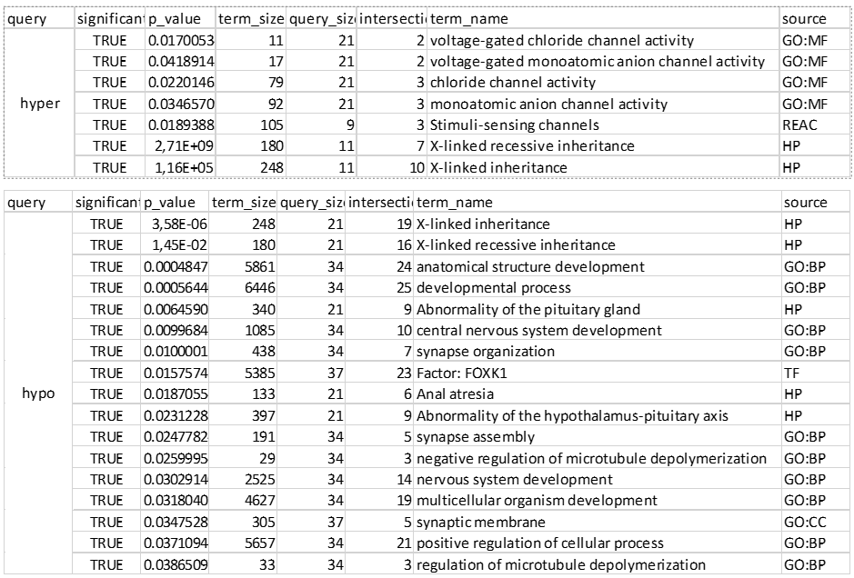

Summary
Summary
In summary, in this project we tryed to answer the following questions:
Is there an age-accelerating factor for XALD patients according to the changes in methylation?
Which is the methylation mark associated with XALD disease?
In order to give an answer we started by trying the conventional analysis following the standard workflow including preprocessing, data filtering, DMPs & DMRs identification and finally pathway analysis. We tried different combinations of cutoff values and thresholds for each step and we also tried adding more controls from external sources.
Conventional analysis using BIT pipline.
Conventional approach + external controls from GEO.
From this first approach we could identify some enriched pathways with genes associated with DMPs (individual probes). Nevertheless, by adding age to the model as a covariate this differences where lost.

Since the results from this conventional analysis where not satisfying we then tryed some other analysis replicating existing literature on DNA methylation associated with age:
- Checking for age-related signatures following the workflow described in @Steegenga2014
Here we saw some differences in methylation for our data for the set related with no change in gene expression.
readRDS("data/ztab.rds")?(caption)
ref model condition N p.value Case Ctl
1 cgSetm residuals cAMN 4556 0.000000e+00 0.5179677 0.4919976
2 cgSet_NO residuals cAMN 3956 0.000000e+00 0.5182289 0.4917175
3 cgIn_NO residuals cAMN 837 0.000000e+00 0.5238554 0.4841475
4 cgIn_consensus residuals cAMN 3826 4.611327e-290 0.5112390 0.4955195
5 cgSet_pre residuals cAMN 6878 2.209406e-268 0.5089070 0.4976330
6 cgSetm residuals Disease 4556 4.091372e-245 0.5014336 0.4919976
7 cgSet_NO residuals Disease 3956 1.265880e-228 0.5014942 0.4917175
8 cgIn_NO residuals Disease 837 8.489375e-176 0.5027597 0.4841475
9 cgIn_top residuals cAMN 4695 2.507026e-161 0.5082866 0.4977346
10 cgSetm residuals AMN 4556 1.790816e-129 0.4988899 0.4919976
11 cgSet_NO residuals AMN 3956 7.363714e-123 0.4989196 0.4917175
12 cgIn_NO residuals AMN 837 2.064456e-118 0.4995142 0.4841475
13 cgSet_Exprs residuals cAMN 638 1.656484e-100 0.5163686 0.4938602
14 cgIn_pre residuals cAMN 3011 4.104878e-70 0.5075933 0.4989758
15 cgIn_consensus residuals Disease 3826 8.610963e-67 0.5008364 0.4955195
16 cgSet_pre residuals Disease 6878 6.053748e-36 0.5005079 0.4976330
17 cgIn_consensus residuals AMN 3826 5.567936e-33 0.4992360 0.4955195
18 cgIn_top residuals Disease 4695 8.554518e-22 0.5004015 0.4977346
19 cgSet_Exprs residuals Disease 638 1.846942e-21 0.5010346 0.4938602
20 cgSet_pre residuals AMN 6878 8.462111e-12 0.4992157 0.4976330
21 cgSet_Exprs residuals AMN 638 2.462806e-10 0.4986755 0.4938602
22 cgIn_top residuals AMN 4695 2.176250e-07 0.4991884 0.4977346
23 cgIn_pre residuals Disease 3011 2.126750e-04 0.5002614 0.4989758
24 cgIn_pre residuals AMN 3011 6.526093e-01 0.4991334 0.4989758
diff
1 0.0259701017
2 0.0265114143
3 0.0397079641
4 0.0157194645
5 0.0112740100
6 0.0094359547
7 0.0097766251
8 0.0186122048
9 0.0105519788
10 0.0068922398
11 0.0072020421
12 0.0153667034
13 0.0225083193
14 0.0086175199
15 0.0053169035
16 0.0028748712
17 0.0037165095
18 0.0026668518
19 0.0071743510
20 0.0015826960
21 0.0048152789
22 0.0014537553
23 0.0012856247
24 0.00015764094. Checking age acceleration as decribed by @Horvath2013
We identified a particular set of age-related genes that were differentially methylated for the XALD + cerebral condition in adult patients for specific sites that had been previously reported to be related with age.
See ?@tbl-adult_z-test_cov_model
- We also identified the main pathways associated with the disease.